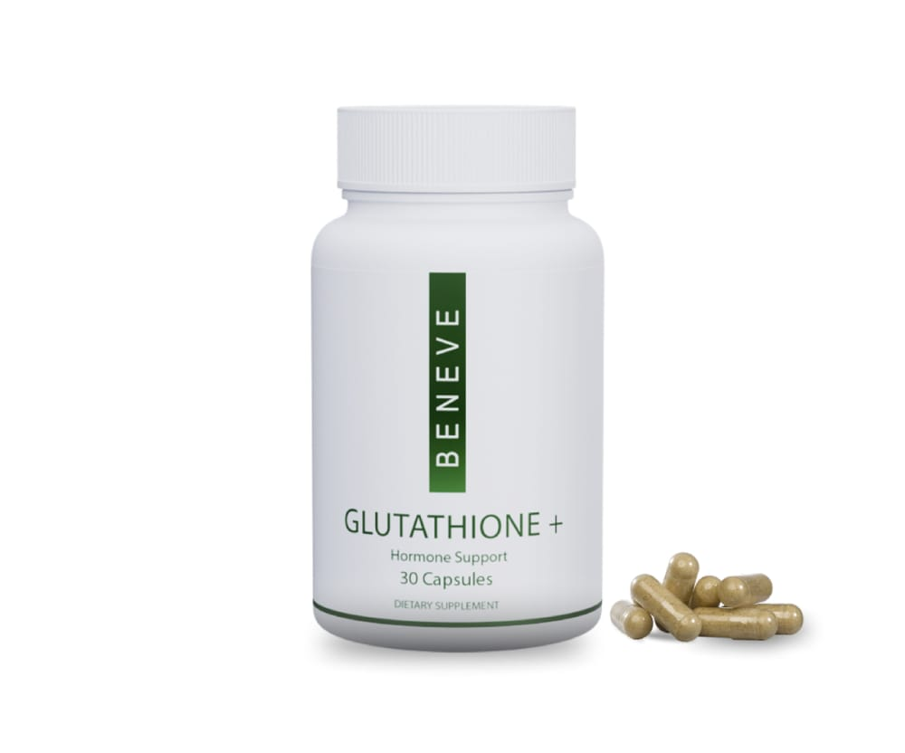

There is a compound called DIM that has been getting a lot of attention in the hormone conversation. It shows up in supplements, in podcasts, in every wellness feed.
Here is the part that rarely gets said out loud: you do not get DIM from a plant directly. Your body makes it.
Broccoli, kale, cabbage, cauliflower and their relatives contain a family of compounds called glucosinolates. When you chew and digest them, those turn into indole-3-carbinol, and your stomach acid converts that into DIM. The vegetable is the raw material. Your own digestion does the manufacturing.
The same is true of the other name on this list. Glutathione gets called the master antioxidant, and your liver makes it constantly out of three amino acids, one of which, cysteine, comes almost entirely from sulfur-rich foods. Eggs. Garlic. Onions. And, again, the cruciferous family.
So the whole strategy of this guide is one sentence: eat the raw material often enough that your body can keep up its side of the deal.
The problem is never belief. Almost nobody has trouble believing broccoli is good for them. They have trouble eating it on a Tuesday. Dinner is where vegetables go to be planned and then not cooked. Breakfast is usually a lost cause.
Lunch is different. Lunch is the one meal you can decide about once, on a Sunday, and then simply carry with you.
That is what this guide is. Ten lunches you can pack, every one of them built on the cruciferous vegetables your body turns into DIM, with the sulfur foods your body turns into glutathione threaded all the way through. They hold in a container. They do not need reheating. They are not sad.
A quick, honest note before we start. Food is not a drug, and this guide is not medical advice. Eating well supports what your body already does, and it does it gently and over time. Nothing here is a treatment for a hormone condition. If you have one, or you are on any medication, keep that conversation with your healthcare provider. Good food sits alongside it, it does not replace it.
Two pathways, and each one has a short list of foods behind it.
1. Cruciferous vegetables become DIM.
Broccoli, cabbage, kale, cauliflower, Brussels sprouts, bok choy, arugula, watercress and radish all carry glucosinolates. Chewing and digestion break those down into indole-3-carbinol, and your stomach converts a share of that into DIM. This is why the advice is always eat the vegetable, not find the compound. The compound is downstream of the vegetable.
2. Sulfur foods become glutathione.
Your body builds glutathione out of three amino acids: cysteine, glycine and glutamate. Glycine and glutamate are easy to come by. Cysteine is the bottleneck, and cysteine rides in on sulfur-rich foods. Eggs, garlic, onions, leeks, shallots, asparagus, and cruciferous vegetables again, which is why that family keeps showing up.
3. Both pathways prefer little and often over big and rare.
This is the part that decides whether any of it works. One enormous kale salad in a week does much less than a cup of something cruciferous most days. Which is, again, an argument for lunch.
A note on cooking. Raw and lightly cooked keep more of the glucosinolates intact than long boiling. Shredded raw cabbage, quick-roasted broccoli and a two-minute blanch all do well. Boiling a pot of broccoli for fifteen minutes and pouring the water down the sink pours a good deal of the point down with it. Roast it, shred it, or steam it briefly.
A note on broccoli sprouts. Three-day-old broccoli sprouts carry many times the glucosinolate load of a mature head, gram for gram. A small handful on top of a lunch does more for less effort than anything else in this guide. They are in most grocery stores near the salad bags, and you can grow them in a jar for pennies.

Everything in this guide works by getting DIM into you through food. Beneve's Glutathione+ is a daily capsule with DIM in it, alongside Opitac™ Glutathione and Xanthohumol.
See Glutathione+Every lunch in this guide is the same five slots. Once you see it, you can build your own forever and stop needing recipes.
Cruciferous base + Protein + Sulfur ally + Dressing + Crunch
1. A cruciferous base, about two cups. Shredded cabbage, massaged kale, roasted broccoli, riced cauliflower, shaved sprouts. This is the DIM slot and it is not optional.
2. A protein, a palm-sized portion. Chicken, tuna, eggs, chickpeas, beef, turkey, edamame. This is what keeps you out of the vending machine at three.
3. A sulfur ally. Red onion, garlic in the dressing, a hard-boiled egg, a few spears of asparagus. Usually this is already in the dressing, which is the point.
4. A dressing with fat and acid. Fat carries flavour and keeps you full. Acid keeps everything tasting bright after four hours in a bag. Never skip the acid.
5. Crunch. Toasted almonds, pumpkin seeds, sesame, radish, a handful of broccoli sprouts. This is what makes a packed lunch worth opening.
The container rule. Wet on the bottom, sturdy in the middle, crunchy on top, dressing on the side if you are packing more than a day ahead. Shake at noon.
Red cabbage and kale together carry the cruciferous load, the sesame-ginger dressing hides that fact completely, and it is the single best-holding lunch in this guide. Genuinely better on day two.
| Ingredient | Amount |
|---|---|
| Red cabbage, shredded thin | 4 cups |
| Kale, stems out, sliced thin | 2 cups |
| Cooked chicken, shredded | 1 lb |
| Carrot, grated | 1 |
| Green onion, sliced | 4 |
| Toasted sliced almonds | ½ cup |
| Sesame oil | 2 tbsp |
| Rice vinegar | 3 tbsp |
| Fresh ginger, grated | 1 tbsp |
| Garlic, crushed | 1 clove |
| Honey | 1 tsp |
| Salt and pepper | to taste |
Broccoli and eggs is the cruciferous plus sulfur pairing in its most direct form, and the yogurt dressing makes it taste like a deli lunch instead of a health project.
| Ingredient | Amount |
|---|---|
| Broccoli florets, chopped small | 5 cups |
| Eggs, hard boiled and chopped | 8 |
| Plain Greek yogurt | ¾ cup |
| Dijon mustard | 1 tbsp |
| Red onion, diced fine | ½ |
| Lemon, juice | 1 |
| Fresh dill, chopped | 2 tbsp |
| Pumpkin seeds | ¼ cup |
| Salt and pepper | to taste |
Kale is the only salad green that survives a Caesar dressing in a bag until noon. The dressing is built on raw garlic, so the sulfur is doing double duty as the flavour.
| Ingredient | Amount |
|---|---|
| Kale, stems out, torn | 8 cups |
| Chickpeas, drained and dried | 2 cans |
| Olive oil | 3 tbsp |
| Smoked paprika | 1 tsp |
| Plain Greek yogurt | ½ cup |
| Parmesan, grated | ⅓ cup |
| Garlic, crushed | 2 cloves |
| Lemon, juice | 1 |
| Anchovy paste, optional | 1 tsp |
| Salt and pepper | to taste |
DIM is what the broccoli, cabbage and kale in these lunches are for. Glutathione+ carries it in one capsule, with Opitac™ Glutathione and Xanthohumol alongside it.
See Glutathione+Raw Brussels sprouts are sweet and nutty, nothing like the boiled memory, and raw means the glucosinolates arrive intact. Apple and walnut make it taste like autumn instead of like discipline.
| Ingredient | Amount |
|---|---|
| Brussels sprouts, shaved thin | 6 cups |
| Apple, crisp, matchsticked | 1 |
| Cooked turkey or chicken, diced | 1 lb |
| Walnuts, toasted and chopped | ½ cup |
| Shallot, sliced paper thin | 1 |
| Olive oil | 3 tbsp |
| Apple cider vinegar | 2 tbsp |
| Dijon mustard | 1 tsp |
| Honey | 1 tsp |
| Salt and pepper | to taste |
Broccoli slaw is shredded broccoli stalk, which is the part most people throw away and is just as cruciferous as the florets. Cold noodles make it feel like takeout.
| Ingredient | Amount |
|---|---|
| Broccoli slaw | 4 cups |
| Soba or rice noodles, cooked and cooled | 8 oz dry |
| Edamame, shelled | 1½ cups |
| Red cabbage, shredded | 2 cups |
| Green onion, sliced | 4 |
| Cilantro, chopped | ½ cup |
| Sesame oil | 2 tbsp |
| Soy sauce or tamari | 3 tbsp |
| Rice vinegar | 2 tbsp |
| Garlic, crushed | 2 cloves |
| Sesame seeds | 2 tbsp |
| Chili crisp, optional | to taste |
Riced cauliflower is the cruciferous base hiding in plain sight, and unlike real rice it does not turn to paste in a container. Black beans and avocado do the rest.
| Ingredient | Amount |
|---|---|
| Cauliflower rice | 6 cups |
| Black beans, drained | 2 cans |
| Red onion, diced | 1 |
| Garlic, crushed | 3 cloves |
| Cumin and smoked paprika | 1 tsp each |
| Olive oil | 2 tbsp |
| Lime, juice | 2 |
| Cherry tomatoes, halved | 2 cups |
| Avocado | 2 |
| Cilantro, chopped | ½ cup |
| Salt and pepper | to taste |
Watercress and radish are both cruciferous and both sharp, so this one wakes you up. It is also the fastest lunch in the guide, about six minutes.
| Ingredient | Amount |
|---|---|
| Watercress | 6 cups |
| Radishes, sliced thin | 10 |
| Tuna in olive oil, drained | 3 cans |
| Eggs, hard boiled and quartered | 4 |
| Cucumber, sliced | 1 |
| Shallot, sliced thin | 1 |
| Olive oil | 3 tbsp |
| Lemon, juice | 1 |
| Dijon mustard | 1 tsp |
| Capers | 2 tbsp |
| Salt and pepper | to taste |
Bok choy stays crisp in a way most greens do not, and this is the one on the list that satisfies a proper appetite. The garlic is doing sulfur duty and flavour duty at once.
| Ingredient | Amount |
|---|---|
| Flank or sirloin steak, sliced thin | 1 lb |
| Bok choy, chopped | 6 cups |
| Rice noodles, cooked and cooled | 8 oz dry |
| Garlic, crushed | 4 cloves |
| Fresh ginger, grated | 1 tbsp |
| Soy sauce or tamari | 3 tbsp |
| Sesame oil | 1 tbsp |
| Rice vinegar | 2 tbsp |
| Green onion, sliced | 4 |
| Sesame seeds | 2 tbsp |
| Neutral oil, for the pan | 1 tbsp |
Roasting broccoli at high heat makes it something you actually want to eat cold, which is the entire problem with vegetables and lunch. Feta and lemon do the heavy lifting.
| Ingredient | Amount |
|---|---|
| Broccoli florets | 8 cups |
| Red onion, wedged | 1 |
| Farro or quinoa, cooked | 3 cups |
| Feta, crumbled | 1 cup |
| Olive oil | 4 tbsp |
| Lemon, zest and juice | 1 |
| Garlic, crushed | 2 cloves |
| Pumpkin seeds | ½ cup |
| Chili flakes | ½ tsp |
| Salt and pepper | to taste |
Nut free, dairy free, gluten free and non GMO. Formulated to support cellular health, hormone support and overall wellness.
See Glutathione+The cabbage leaf IS the wrap, so the cruciferous is structural rather than an ingredient you have to remember. The dressing is built on garlic, herbs and avocado.
| Ingredient | Amount |
|---|---|
| Savoy or green cabbage, large outer leaves | 12 |
| Cooked turkey or chicken, sliced | 1 lb |
| Avocado | 2 |
| Plain Greek yogurt | ½ cup |
| Garlic | 1 clove |
| Fresh basil and parsley | 1 cup packed |
| Lemon, juice | 1 |
| Cucumber, matchsticked | 1 |
| Carrot, grated | 1 |
| Broccoli sprouts | 2 cups |
| Salt and pepper | to taste |
Forty minutes on a Sunday and most of the week is done. You are not cooking five lunches, you are cooking five components.
Put the oven on at 450F and roast, on two sheet pans: a large head of broccoli in florets, a bunch of asparagus, and a can of drained chickpeas. Twenty to twenty five minutes. This covers lunches 3, 9, and half of anything else.
On the stove, meanwhile: hard boil eight eggs, and cook a batch of farro, quinoa or noodles. Rinse the grains or noodles cold.
On the board, no cooking: shred half a red cabbage and a bag of Brussels sprouts. Both keep three days shredded, in a container, with a paper towel on top.
Make one jar of dressing. Olive oil, lemon, crushed garlic, mustard, salt. It fits nine of the ten lunches here and it takes ninety seconds.
Then all week, assemble. Cruciferous base, protein, sulfur ally, dressing, crunch. Two minutes in the morning, or two minutes the night before if mornings are not your friend.
Cruciferous: broccoli, red cabbage, savoy cabbage, kale, Brussels sprouts, cauliflower or cauliflower rice, bok choy, arugula, watercress, radishes, broccoli sprouts, broccoli slaw
Sulfur allies: eggs, garlic, red onion, shallots, leeks, asparagus, avocado, spinach, Greek yogurt
Proteins: chicken, turkey, flank steak, tuna in olive oil, chickpeas, black beans, edamame, feta, parmesan
Grains and noodles: farro, quinoa, soba noodles, rice noodles
Crunch: sliced almonds, walnuts, pumpkin seeds, sesame seeds
Pantry: olive oil, sesame oil, rice vinegar, apple cider vinegar, Dijon mustard, soy sauce or tamari, honey, capers, smoked paprika, cumin, chili flakes
Fresh herbs: dill, cilantro, basil, parsley
The short version, if you buy nothing else: a bag of shredded red cabbage, a dozen eggs, a head of garlic, a lemon, and a bottle of olive oil. That is four of these lunches.
The two pathways
Cruciferous vegetables → glucosinolates → indole-3-carbinol → DIM
Sulfur foods → cysteine → your own glutathione
The formula
Cruciferous base + protein + sulfur ally + dressing with fat and acid + crunch
The rules that actually matter
The five-minute version
Bagged slaw, a tin of tuna in olive oil, a hard-boiled egg, lemon, olive oil, salt. Done.
You do not need all ten of these lunches. You need two you genuinely like, on repeat, most weeks.
That is the honest finding behind every eating habit that survives. Variety is what people plan for and consistency is what actually works. Pick the two that sounded good while you were reading, make them this week, and let the other eight sit there for when you get bored.
The pathways in this guide do not care about your enthusiasm. They care about frequency. A cup of something cruciferous most days, a sulfur food in most meals, and your body has what it needs to keep making the things it makes.
And be reasonable with yourself about the days it does not happen. A packed lunch four days out of five is a completely different life from a packed lunch zero days out of five, and the difference between four and five is worth almost nothing.
Food is the foundation. If you want to build on it, here is the one product worth knowing about.
Beneve's Glutathione+ is a daily capsule built on the same two names this guide is built around. Each capsule carries 300mg of Opitac™ L-Glutathione, 150mg of DIM, 175mg of hops extract for xanthohumol, and a little black pepper extract to help absorption.
That DIM number is the useful one to hold onto. It is the same compound your body makes out of the vegetables in Part One, in a fixed daily amount that does not depend on whether you got the cabbage packed on Thursday.
Beneve says it is formulated to support cellular health and hormone support, and that it promotes balanced estrogen metabolism, supports healthy detoxification and liver function, and provides antioxidant and cellular protection.
Thirty capsules, one a day, no mixing and no measuring. Nut free, dairy free, gluten free and non GMO.
It does not replace the vegetables. Nothing does. It makes it easier to stay consistent on the weeks the lunchbox does not happen.
You have the two pathways, the ten lunches, the prep plan and the grocery list. That is everything you need for a completely different Tuesday.
If you want to go further, take a look at Glutathione+ for the daily version of what these lunches are doing, or reach back out to the person who sent you this guide. They can tell you what has worked for the people they know.
Either way, pack the cabbage. It is the easiest change in here and it is the one that does the most.
This guide is for general education and it is not medical advice. It does not diagnose, treat, cure or prevent anything. Individual needs vary, and the nutrition figures are rough estimates for planning.
These statements have not been evaluated by the Food and Drug Administration. Glutathione+ is not intended to diagnose, treat, cure or prevent any disease.
Cruciferous vegetables interact with thyroid function in some people, and both DIM and cruciferous intake are worth raising with a professional if you are pregnant, nursing, on hormone therapy, on blood thinners, or managing a thyroid condition. If you have a medical condition or take medication, talk to your healthcare provider before making significant changes to how you eat.